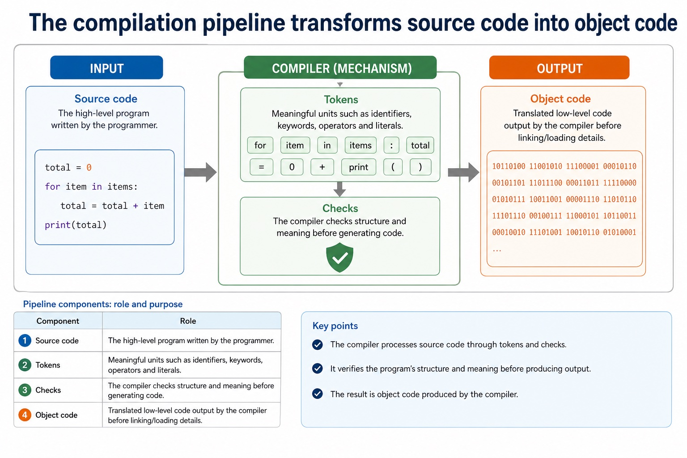
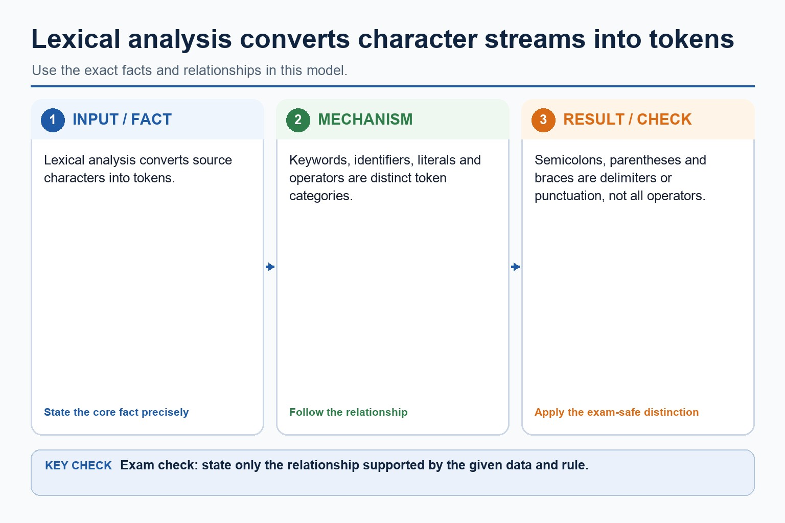
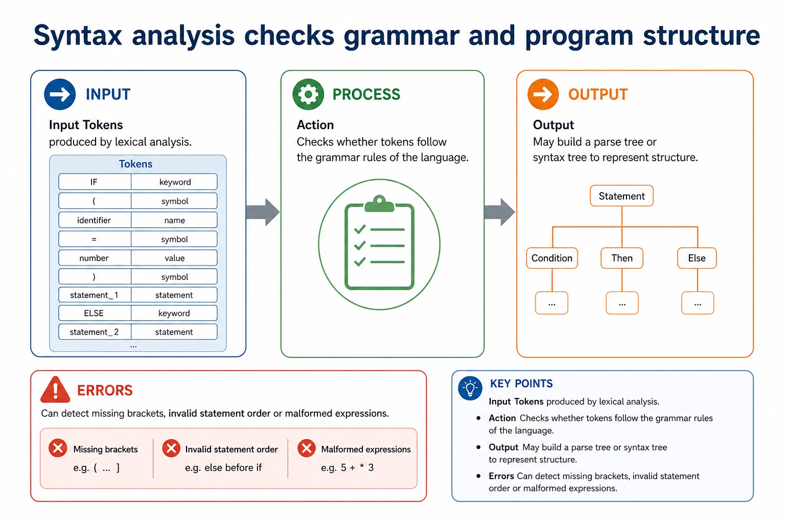
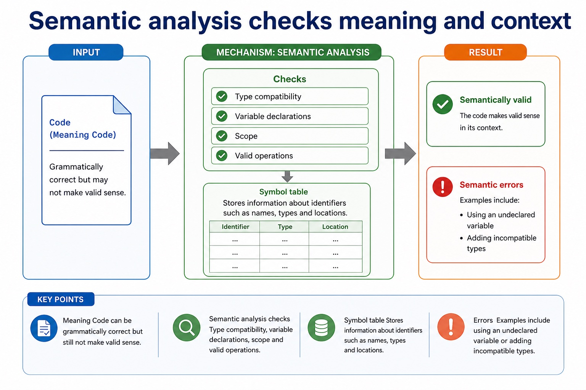

Lesson 057 | 45 minutes | Paper 1 Section 5 | System software
A compiler is not one giant button. It is a careful sequence of checks and transformations.
This lesson follows source code through the main compilation stages:
lexical analysis, syntax analysis, semantic analysis, code generation and optimisation.
The aim is to explain what each stage does and what kind of error it can detect.
Sequencethe main stages from source code to object code
Explaintokens, grammar checks, semantic checks and code generation
Classifycompiler errors and outputs using precise exam wording
Compilers are strict because processors are even stricter.
Why this matters
Exam questions often ask students to name a stage and describe its role. Stage names alone rarely earn full marks.
Common trap
Do not mix syntax and semantic errors. Grammar may be valid while meaning is still wrong.
Warm-up hook
What happens first when a compiler reads total = price + tax?
Click the best answer. The compiler does not begin by panicking; it tokenises first.
Choose one. The early compiler stages inspect the source code before object code exists.
Knowledge point 1
The compilation pipeline transforms source code into object code
Source codeThe high-level program written by the programmer.TokensMeaningful units such as identifiers, keywords, operators and literals.ChecksThe compiler checks structure and meaning before generating code.Object codeTranslated low-level code output by the compiler before linking/loading details.
The compilation pipeline transforms source code into object code

The compilation pipeline transforms source code into object code: source-grounded visual explanation.
Lesson fact: Source code The high-level program written by the programmer.
Lesson fact: Tokens Meaningful units such as identifiers, keywords, operators and literals.
Lesson fact: Checks The compiler checks structure and meaning before generating code.
Lesson fact: Object code Translated low-level code output by the compiler before linking/loading details.
Knowledge point 2
Lexical analysis converts character streams into tokens
InputSource code as a stream of characters.ActionGroups characters into tokens such as identifiers, operators, constants and keywords.AlsoMay remove unnecessary whitespace and comments.ErrorsCan detect invalid characters or unrecognised symbols.
Lexical analysis converts character streams into tokens

Lexical analysis converts character streams into tokens: source-grounded visual explanation.
Lesson fact: Input Source code as a stream of characters.
Lesson fact: Action Groups characters into tokens such as identifiers, operators, constants and keywords.
Lesson fact: Also May remove unnecessary whitespace and comments.
Lesson fact: Errors Can detect invalid characters or unrecognised symbols.
Knowledge point 3
Syntax analysis checks grammar and program structure
InputTokens produced by lexical analysis.ActionChecks whether tokens follow the grammar rules of the language.OutputMay build a parse tree or syntax tree to represent structure.ErrorsCan detect missing brackets, invalid statement order or malformed expressions.
Syntax analysis checks grammar and program structure

Syntax analysis checks grammar and program structure: source-grounded visual explanation.
Lesson fact: Input Tokens produced by lexical analysis.
Lesson fact: Action Checks whether tokens follow the grammar rules of the language.
Lesson fact: Output May build a parse tree or syntax tree to represent structure.
Lesson fact: Errors Can detect missing brackets, invalid statement order or malformed expressions.
Knowledge point 4
Semantic analysis checks meaning and context
MeaningCode can be grammatically correct but still not make valid sense.ChecksType compatibility, variable declarations, scope and valid operations.Symbol tableStores information about identifiers such as names, types and locations.ErrorsExamples include using an undeclared variable or adding incompatible types.
Semantic analysis checks meaning and context

Semantic analysis checks meaning and context: source-grounded visual explanation.
Lesson fact: Meaning Code can be grammatically correct but still not make valid sense.
Lesson fact: Checks Type compatibility, variable declarations, scope and valid operations.
Lesson fact: Symbol table Stores information about identifiers such as names, types and locations.
Lesson fact: Errors Examples include using an undeclared variable or adding incompatible types.
Knowledge point 5
Code generation produces object code
InputChecked intermediate representation or syntax tree.ActionGenerates target low-level instructions for the processor or virtual machine.OutputObject code, often not yet a complete final executable.BoundaryLinking external modules and loading into memory belong to the next lesson.
Lesson fact: Input Checked intermediate representation or syntax tree.
Lesson fact: Action Generates target low-level instructions for the processor or virtual machine.
Lesson fact: Output Object code, often not yet a complete final executable.
Lesson fact: Boundary Linking external modules and loading into memory belong to the next lesson.
Knowledge point 6
Optimisation improves code without changing what it does
PurposeImprove efficiency, such as speed or memory use.ExamplesRemove unreachable code or avoid repeated calculations.RuleThe program's intended behaviour should remain the same.TrapOptimisation does not mean fixing all logic errors in the programmer's algorithm.
Optimisation improves code without changing what it does
Optimisation improves code without changing what it does: source-grounded visual explanation.
Lesson fact: Purpose Improve efficiency, such as speed or memory use.
Lesson fact: Examples Remove unreachable code or avoid repeated calculations.
Lesson fact: Rule The program's intended behaviour should remain the same.
Lesson fact: Trap Optimisation does not mean fixing all logic errors in the programmer's algorithm.
Interactive tool
Compilation stage selector
Select a compiler task and identify the relevant stage.
Worked examples
Track one line through compiler stages
Practice
Instant-check questions
Type a short answer, then check. Reveal the expected wording only after trying.
Mistake debugging
Fix the almost-right answers
Exam-style questions
Answer first, then reveal the CIE-style mark scheme
These are original Cambridge-style questions. The mark schemes include strict wording notes and follow-through guidance.
Summary
Compilation memory map
LexicalCharacters to tokens; removes comments/extra whitespace.
SyntaxChecks grammar and may build a parse tree.
SemanticChecks meaning, types, declarations and scope.
Symbol tableStores identifier information for compiler checks.
Code generationProduces object/target code.
OptimisationImproves efficiency without changing behaviour.
Homework
Clear output, not vague revision
Task 1: Stage tableCreate a table for lexical, syntax, semantic, code generation and optimisation: input, action, output/error.Task 2: Error classificationClassify five errors as lexical, syntax or semantic, and justify each classification in one sentence.Task 3: 6-mark answerExplain how a compiler can process source code and produce object code. Use the words token, grammar, semantic and object code.